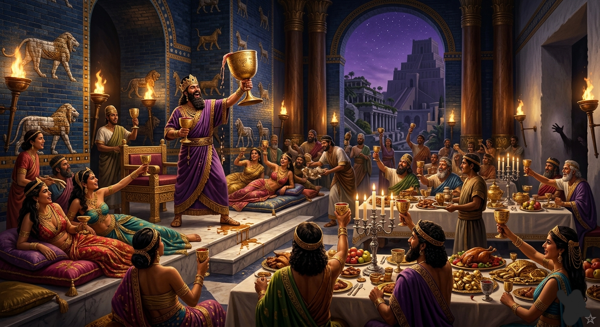

MEU AMIGO ANJO
CAPÍTULO 21 — AS AREIAS E O MENSAGEIRO
O SOL DO DESERTO COMEÇAVA A INCLINAR-SE PARA O OCIDENTE QUANDO A CARAVANA DESCIA LENTAMENTE PELAS ENCOSTAS PEDREGOSAS DA CORDILHEIRA. O VENTO QUENTE SOPRAVA TRAZENDO O CHEIRO SECO DA AREIA DO GRANDE DESERTO DA ARÁBIA, REGIÃO QUE OS MERCADORES DA ÉPOCA CHAMAVAM DE RUB' AL-KHALI, O “QUARTEIRÃO VAZIO”, UM MAR DE DUNAS QUE SEPARAVA TRIBOS, CARAVANAS E CIDADES ESQUECIDAS PELO TEMPO. OS CAMELOS AVANÇAVAM COM A PACIÊNCIA MILENAR DAQUELES ANIMAIS QUE CONHECIAM O RITMO DO DESERTO MELHOR QUE QUALQUER HOMEM. SACOS DE TÂMARAS, ODRES DE ÁGUA, ROLOS DE TECIDO E CAIXAS DE PROVISÕES PENDIAM DOS LOMBOS DAS MONTARIAS. ZORAVAR CAVALGAVA UM POUCO À FRENTE, MANTENDO OS OLHOS ATENTOS AO CAMINHO. EM SUA MÃO HAVIA UMA PEQUENA CAIXA DE MADEIRA ENTALHADA.
ELE PUXOU AS RÉDEAS DE SEU CAMELO, APROXIMANDO-SE DO GUIA DA CARAVANA — UM HOMEM ALTO, DE PELE CURTIDA PELO SOL E BARBA NEGRA ESPESSA. ERA ALBIBOÁH, UM SAUDITA DAS MONTANHAS DA ARÁBIA, CONTRATADO PARA CONDUZIR A COMITIVA ATRAVÉS DAS TRILHAS TRAIÇOEIRAS DO DESERTO. ZORAVAR ABRIU A CAIXA E ESTENDEU O CONTEÚDO.
— TOME! MEU MESTRE MANDOU VOCÊ EXPERIMENTAR.
ALBIBOÁH PEGOU UM DOS PEQUENOS DOCES, OBSERVANDO-O COM CURIOSIDADE. ERA FEITO DE MASSA FINA, ENROLADO E COBERTO COM MEL ESPESSO E PISTACHE TRITURADO. ELE DEU UMA MORDIDA CUIDADOSA. SEUS OLHOS SE ARREGALARAM. — PELAS AREIAS DE AD! — MURMUROU ELE, MASTIGANDO LENTAMENTE.
ALBIBOÁH PEGOU UM PEQUENO ODRE PRESO À SELA, TOMOU UM GOLE DE ÁGUA E ENTÃO VOLTOU-SE PARA ZORAVAR. — SÃO DOCES FEITOS DE QUÊ, SENHOR ZORAVAR? A PERGUNTA MORREU NO AR. PORQUE NAQUELE EXATO INSTANTE A CARAVANA ALCANÇOU UM PONTO MAIS ALTO DA ENCOSTA. E O VALE ABAIXO APARECEU. ALBIBOÁH FICOU IMÓVEL. ZORAVAR TAMBÉM. LÁ EMBAIXO, O PEQUENO VILAREJO DE QARYAT AL-NAHASH ESTAVA ENVOLTO EM CHAMAS. COLUNAS DE FUMAÇA NEGRA SUBIAM PARA O CÉU COMO SERPENTES GIGANTESCAS. AS CASAS DE BARRO E PALHA ARDIAM VIOLENTAMENTE, ILUMINADAS PELO CREPÚSCULO QUE JÁ TINGIA O HORIZONTE DE VERMELHO.

BELTESSAZAR DESMONTOU DO CAMELO SEM PRESSA. CAMINHOU ENTRE OS FERIDOS. AJOELHOU-SE DIANTE DE UM HOMEM QUE TENTAVA ESTANCAR O SANGUE. — ÁGUA — ORDENOU. LAVOU O FERIMENTO E AMARROU UM PEDAÇO DE TECIDO. DEPOIS LEVANTOU-SE E FALOU ALTO: — ABRAM AS CAIXAS DE MANTIMENTOS. SACOS DE TRIGO, TÂMARAS SECAS E COBERTORES COMEÇARAM A SER DISTRIBUÍDOS. ELE CHAMOU ALBIBOÁH: — VOCÊ VOLTARÁ AQUI COM MAIS ALIMENTOS E TECIDOS. ESSAS PESSOAS NÃO SOBREVIVERÃO AO FRIO DA NOITE DO DESERTO SEM AJUDA.

AS SEMANAS SEGUINTES FORAM INTENSAS. BELTESSAZAR DIVIDIA SEUS DIAS ENTRE NEGOCIAÇÕES E INSPEÇÕES. TRATAVA DA COMPRA DE ELEFANTES DE GUERRA E EXAMINAVA ESPECIARIAS VINDAS DO EGITO. — IMPÉRIOS NÃO SÃO SUSTENTADOS APENAS POR ESPADAS, ZORAVAR. SÃO SUSTENTADOS POR COMÉRCIO… E POR REGISTROS. ELE DEDICAVA TEMPO A PRESERVAR SEUS ESCRITOS. ALGUNS ERAM GRAVADOS EM TABLETES DE ARGILA COZIDA. — O FOGO QUEIMA PAPIRO — DIZIA ELE — MAS FORTALECE A ARGILA. PARA OS RELATOS MAIS LONGOS, USAVA PAPIRO OU PERGAMINHO, GUARDADOS DENTRO DE VASOS DE BARRO SELADOS PARA ATRAVESSAREM O TEMPO.
O IMPÉRIO BABILÔNICO JÁ NÃO EXISTIA, MAS OS NOVOS GOVERNANTES MEDO-PERSAS MANTIVERAM BELTESSAZAR NO CARGO. ZORAVAR COMENTOU: — É ESTRANHO, AMO. REIS CAEM, IMPÉRIOS DESAPARECEM, MAS O SENHOR CONTINUA GOVERNANDO. BELTESSAZAR RESPONDEU CALMAMENTE, OLHANDO PARA O CÉU ESTRELADO: — REIS GOVERNAM TERRITÓRIOS, ZORAVAR. MAS DEUS GOVERNA O TEMPO. E POR ISSO BELTESSAZAR CONTINUAVA ESCREVENDO, SENDO O ESCRIBA ATENTO DE UMA HISTÓRIA QUE PERTENCIA AO FUTURO.